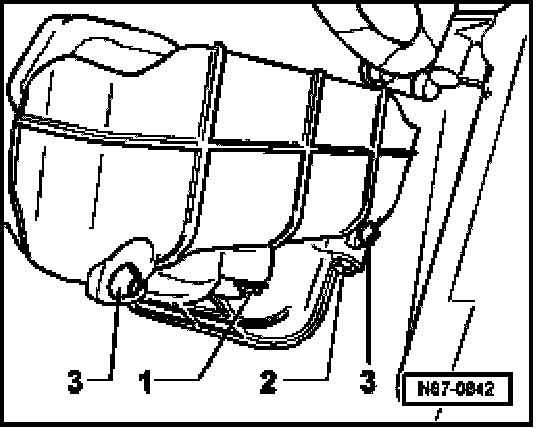
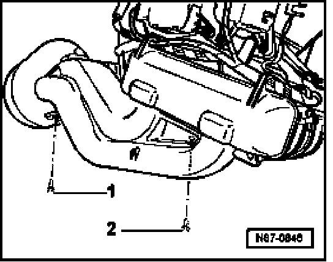
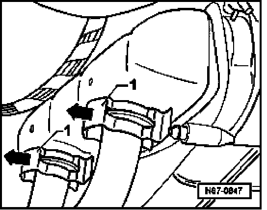
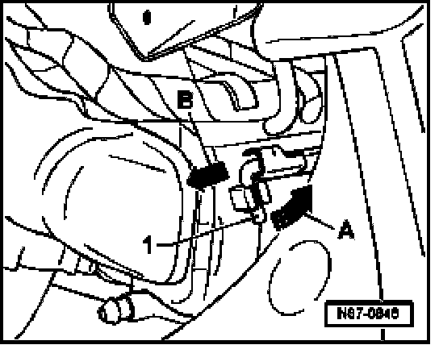
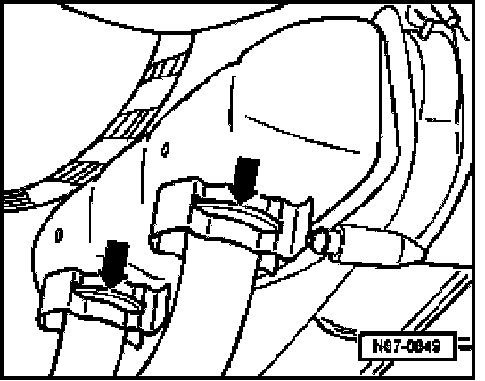

Heater Core: Service and Repair
Heater Core, Removing And Installing
Removing
- Remove lower instrument panel trim:
- Remove entry and start authorization control module
- Removing relay carrier in left front footwell
- Remove on-board power supply control module
NOTE: Always refill and bleed engine cooling system after opening and performing related repairs
- Position drip tray VAG 1306 (or equivalent) under engine.
WARNING: The cooling system is pressurized when the engine is warm. Wear gloves and other protection and carefully release system pressure if necessary before performing repairs.
- Drain cooling system
- Remove right heater core cover.

- Loosen bolt -1- and remove bolt -2-.
- Unclip cover from mounting -3-.
- Pull carpet off center tunnel (in work area).
- Remove left heater core cover.

- Remove screws -1- and -2- and unclip cover.
NOTE: Bolt -2- is hidden by the heater core cover.
- Remove footwell vent.
- Cover carpet in area under heater core using waterproof foil and water absorbing paper.

- Pull retaining clips -1- from coolant hoses.
- Slowly pull coolant lines off of heater core and collect coolant that leaks out in a container.
NOTE: A retaining pin is located under the heater core on the left-hand side, this connects the lower heater core cover to the heating and A/C unit.

- Lift retaining pin -1- out from locking device -arrow A- and pull retaining pin out in direction of -arrow- B.
- Fold cover downward and take heater core out to left.
CAUTION: Use care not to allow coolant to leak onto carpet.
Installing
Install in reverse order of removal, noting the following:
NOTE: Always replace O-rings.
- Secure connections using clamps of standard used in series production.

- When installing retaining clips ensure they are seated -arrow- securely on the heater core.
- Refill and bleed cooling system